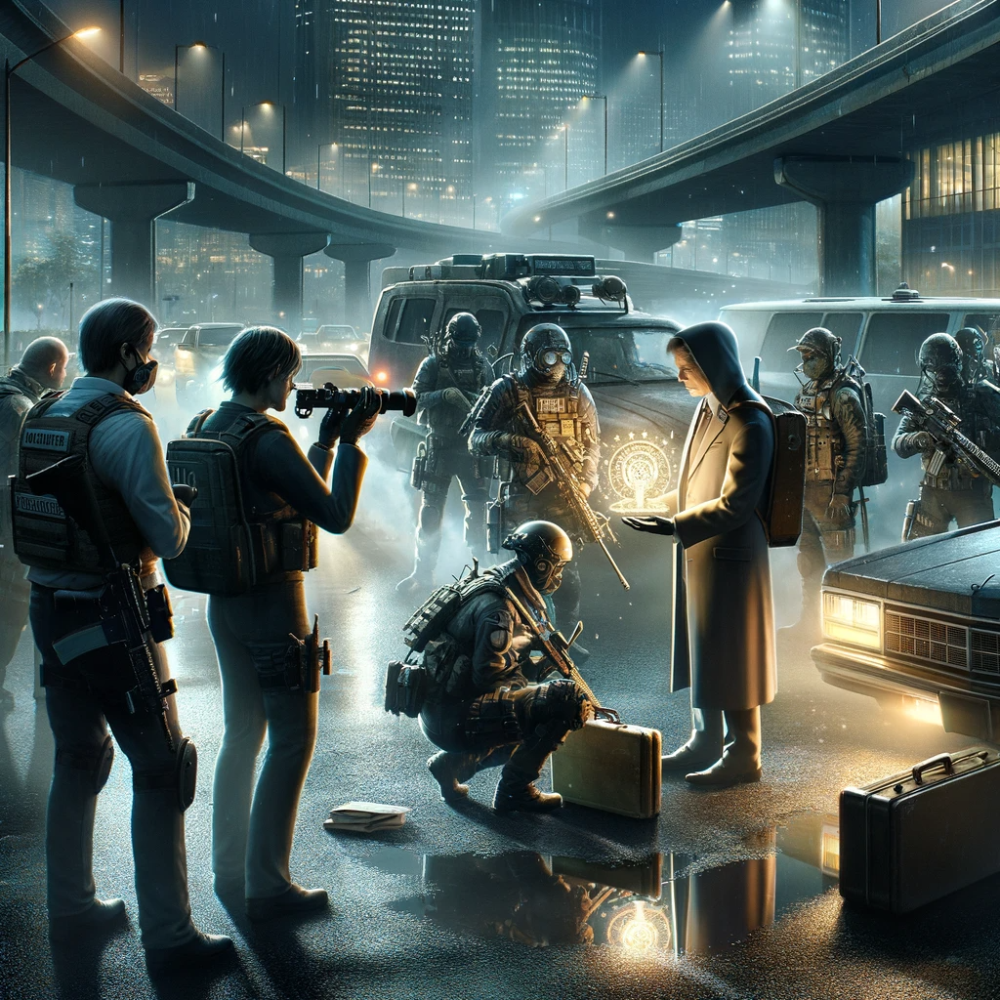
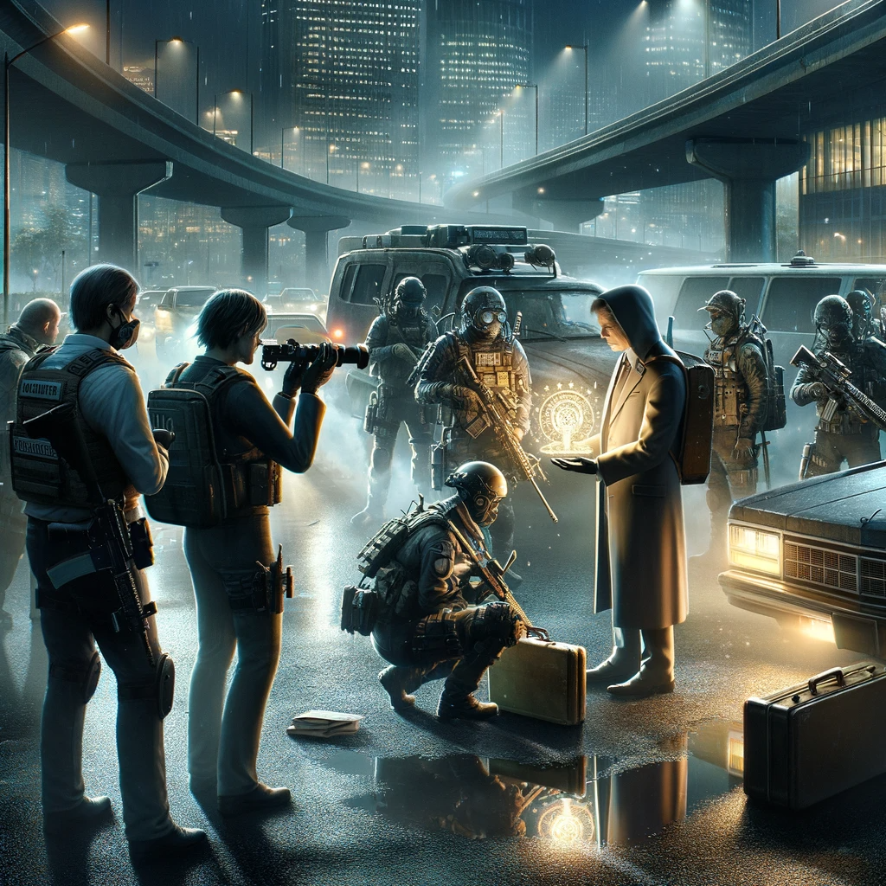

Other Side News Agency
Table of Contents
1. Other Side News Agency / Новостное Агентство Той Стороны
В документе описано три сущности:
- Вселеленная — кратко, для контекста.
- Сеттинг — категориальный анализ.
- Продукты — кратко, для контекста.
1.1. Вселенная
 


- Наука + witchcraft (ритуальная магия + шаманизм).
- «Та сторона» — параллельное измерение, возникает в ответ на массовые/сильные эмоции.
- Появляется чаще и сильнее с ростом населения и его концентрацией.
- Вызов для цивилизации, как глобальное потепление.
- На той стороне можно найти артефакты и притащить в обычный мир.
- Артефакты со временем изменяют владельца физически и ментально.
- Люди с мутациями объединяются в сообщества и начинают шифроваться.
- Сильно мутировавшие люди становятся опасны и уходят на ту сторону, делая её всё опаснее.
- Фольклор основан на ранних случаях проявления той стороны.
1.2. Сеттинг
1.2.1. Мета сеттинг
Urban Legends
1.2.2. Время
Наши дни.
1.2.3. Референсы
- TODO Больше референсов на witchcraft
- Основные
- Otherside Picnic manga animation_series
Близко по концепции. Персонажи. Та сторона. Попаданцы на ту сторону.
- Пикник на обочине book
Близко по концепции.
- X-Files video_series
Без пришельцев. Персонажи. Истории. Пример государственной службы, разбирающейся с аномалиями.
- Marvel's Netflix television series video_series comics
Мир low-grade супергероев: Jessica Jones, Daredevil, Iron Fist, The Defenders, The Punisher, Luke Cage
- American Gods book video_series
- Mononoke animation_series
Not the "Princess Mononoke".
- S.T.A.L.K.E.R. video_game
- Grimm video_series
Сообщество той стороны. Интеграция фольклора. Истории.
- Mieruko Chan manga animation_series
- Mushishi animation_series manga
- Otherside Picnic manga animation_series
- Дополнительные
- SCP Foundation game
- Сталкер Тарковского movie
- Warhouse 13 video_series
- X-Men (Marvel) comics movie video_series animated_series
- Грань video_series
- Ночной дозор book movies
- Supernatural video_series
- Библиотекари video_series movie
- TODO Jonathan Strange & Mr Norrell book video_series
Колдунство. Персонажи той стороны.
- TODO Миядзаки animation_series
- TODO GeGeGe no Kitaro animation_series
- TODO John Constantine movie comics
- TODO Being Human video_series
- SCP Foundation game
1.2.4. Герои
- Основные
- Сталкер / чёрный археолог
- Расследователь
Журналист, детектив, специальный агент.
- Коррумпированный политик
- Колдун/экзорцист
- Бизнесмен с большими ресурсами (Бэтмен, Тони Старк, Лекс Лютор)
- Коллекционер диковинок / Торговец артефактами
- Торговец информацией
- Учёный/инженер/механик самоучка
- (почти супер)герой (мутант)
- (почти супер)злодей (мутант)
- Существо из (нео)фольклора (мутант)
- Член секретной организации
- Военщина
- Сталкер / чёрный археолог
- Второстепенные
- фамилиар
- Врач
- ПТСР-шник
Видел то, чего не хотел бы видеть никогда.
- Изгнанник/отшельник
- «Хочу и буду жить простой жизнью»
- Обычный человек с нормальной стороны, которому постоянно мешает жить та сторона.
- Мутант, который всеми силами пытается жить как обычный человек.
- Бармен
- «Призрак»
- Мошенник
- Заблудившийся на той стороне
- фамилиар
1.2.5. Истории
- Основные
- Сталкинг
- Социальные турбулентности
- Личностные
- «Профессиональные»
- Изучение артефакта
- Опыты на людях
- Расследование происшествия
- Расследование серии происшествий / поиск кукловода
- Жизнь отдела расследований
Редакции газеты, детективного агентства.
- «Пиратский корабль»/«Предприятие»
Мы делаем «стартап» в незарегулированной опасной области.
- От соперничества к дружбе
- Предательство/подстава
- Изучение артефакта
- Прочие
1.2.6. Места действия
1.2.7. Артефакты
1.2.8. Биологические аномалии
- Приобретённые уродства
- Небольшие мутации
Клыки, повышенная шерстистость, изменённый цвет глаз, рожки, хвост.
- Манифестации той стороны
Идеальная красота, идеальное уродство, крылья, копыта, заметные изменения кожи, дыхание огнём, тело призрака.
- Аллергия
На свет, серебро, воду, музыку.
- Психические расстройства
1.2.9. Прочее
1.3. Продукты
1.3.1. ММО Other Side News Agency
- Одной строкой
Делай новости, создавай легенды, меняй ту сторону.
- Жанр
Paranormal Mockumentary Investigative Journalism
- Описание
- «ММО» песочница для ролевиков создателей контента и их фоловеров.
- Сними или напиши новость для Tik Tok, Instagram, Twitter о потустороннем мире.
- Если зрители проголосуют за твою новость, она станет реальностью в мире Той Стороны.
- Референсы
- What We Do in the Shadows video_series
Общий настрой, мокументарность, юмор, простота.
- eRepublik game
- Headliner: NoviNews game
- The Westport Independent game
- The Republia Times game
- Interview with the vampire movie
- Daily Chthonicle: Editor's Edition game
- Dirk Gently's Holistic Detective Agency video_series
- What We Do in the Shadows video_series
1.3.2. Сериал Other Side News Agency
1.3.3. Игра Other Side News Agency
*менеджер новостного агенства / гильдии разведчиков
1.4. Заметки
- Как варинат маркетинговой стратегии, можно сосредоточиться на клубах ролевиков.